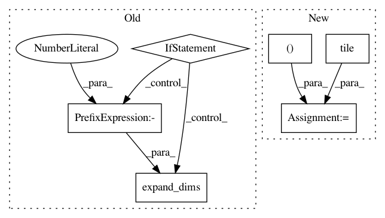

e12bd6a5e5195e158384059da3d5d47638ba12a1,official/vision/detection/dataloader/maskrcnn_parser.py,Parser,_parse_train_data,#Parser#Any#,145
Before Change
offset = image_info[3, :]
boxes = input_utils.resize_and_crop_boxes(
boxes, image_scale, (image_height, image_width), offset)
if self._include_mask:
masks = input_utils.resize_and_crop_masks(
tf.expand_dims(masks, axis=-1),
image_scale, (image_height, image_width), offset)
masks = tf.squeeze(masks, axis=-1)
// Filters out ground truth boxes that are all zeros.
indices = input_utils.get_non_empty_box_indices(boxes)
boxes = tf.gather(boxes, indices)
classes = tf.gather(classes, indices)
if self._include_mask:
After Change
if self._include_mask:
masks = tf.gather(masks, indices)
cropped_boxes = boxes + tf.cast(
tf.tile(tf.expand_dims(offset, axis=0), [1, 2]), dtype=tf.float32)
cropped_boxes = box_utils.normalize_boxes(
cropped_boxes, image_info[1, :])
num_masks = tf.shape(masks)[0]
masks = tf.image.crop_and_resize(
tf.expand_dims(masks, axis=-1),
cropped_boxes,
In pattern: SUPERPATTERN
Frequency: 3
Non-data size: 6
Instances
Project Name: tensorflow/models
Commit Name: e12bd6a5e5195e158384059da3d5d47638ba12a1
Time: 2019-11-01
Author: pengchong@google.com
File Name: official/vision/detection/dataloader/maskrcnn_parser.py
Class Name: Parser
Method Name: _parse_train_data
Project Name: rail-berkeley/softlearning
Commit Name: 7537cc093489dc1b38d52c8b0f5d9dd543c8c7fe
Time: 2019-02-01
Author: hartikainen@berkeley.edu
File Name: softlearning/algorithms/sql.py
Class Name: SQL
Method Name: _create_svgd_update
Project Name: tensorflow/tpu
Commit Name: 11b0078497d44560e1528343b6744451b3400928
Time: 2019-11-01
Author: pengchong@google.com
File Name: models/official/detection/dataloader/maskrcnn_parser.py
Class Name: Parser
Method Name: _parse_train_data